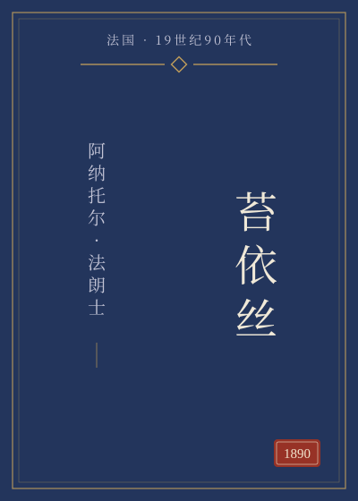
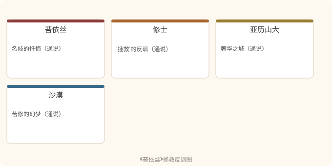

苔依丝
一、基本信息
| 作者 | 阿纳托尔·法朗士 |
|---|---|
| 成书/出版 | 1890年（Britannica B392：Thaïs (1890)——作品列表） Anatole France — Encyclopaedia Britannica（百科全书） |
| 国别/地区 | 法国 |
| 时代 | 近代 · 19世纪90年代 |
| 体裁 | 长篇小说 |
| 语言 | 法语 |

《苔依丝》拯救反讽图（主题·结构图）
二、创作背景
Britannica（B392）：Thaïs——作品列表（1890）。
Britannica（B392）：法朗士——1921诺奖；'古典的优雅'语境（作者级——通说待核）。
题材（通说待核）：修士帕夫努与亚历山大城名妓苔依丝——'拯救'的反讽。
三、内容脉络
（通说待核）修士的'拯救'之旅：沙漠与亚历山大。
（通说待核）苔依丝的'忏悔'与修士的幻梦。
四、主要人物表
| 人物 | 身份 | 说明 |
|---|---|---|
| 帕夫努 | 修士 | （通说待核） |
| 苔依丝 | 名妓 | （B392 书名人物） |
五、主题与艺术特点
- '拯救'的反讽（通说待核）。
- 亚历山大的奢华（通说待核）。
- '灵'与'肉'的辩证（通说待核）。
六、影响与评论
- Britannica：Thaïs (1890)（B392）。
Anatole France — Encyclopaedia Britannica（百科全书） - Britannica：马斯奈歌剧 Thaïs（1894说）待核——不采。
Anatole France — Encyclopaedia Britannica（百科全书）
七、阅读建议
难点
- 亚历山大城的宗教史。
- '圣徒传'的反讽（通说待核）。
- 《苔依丝》中译本（人民文学等——通说待核）。
- 法文原版（公有领域）。
法朗士早期；与《企鹅岛》对读。
八、待核实
- 帕夫努/苔依丝人名核对（通说）。
- 1890年出版细节待核。
- '沙漠'细节待核。